// Autonomous IT Resilience & Optimization Platform
Infrastruttura IT
autonoma,
resiliente.
AIROP combina Cloud, DevOps e Intelligenza Artificiale per rendere le infrastrutture IT aziendali capaci di monitorarsi, rilevare anomalie e intervenire autonomamente — con supervisione admin.
$ python agentv2.py ✓ Agent V2 initialized Backend: http://localhost:5000 Interval: 5s ✓ Heartbeat inviato ✓ cpu=42.1% ram=61.3% ✓ AI Engine: analisi in corso... IsolationForest: no anomalie ✓ AI Decision pending: 0 Self-healing: attesa approvazione admin ▋
Cosa fa AIROP
Un sistema distribuito che raccoglie metriche, le analizza con ML, propone azioni all'admin e mostra tutto in real-time.
Raccolta Metriche Distribuita
Agent Python headless raccoglie ogni 5 secondi CPU, RAM, disco, rete e processi. Heartbeat periodico per segnalare stato Online/Offline. Configurazione via YAML con retry automatico.
AI Anomaly Detection
Isolation Forest rileva anomalie ogni 5 minuti. L'AI engine (Ollama/OpenAI) genera raccomandazioni con confidence score. Ogni decisione AI attende l'approvazione dell'admin prima di essere eseguita.
Admin Approval Workflow
Nessuna azione automatica senza supervisione. L'admin rivede ogni decisione AI con reasoning e confidence score, approva o rifiuta, poi esegue. Audit trail completo di tutte le operazioni.
Dashboard Real-Time
React 18 con dark/light mode, aggiornamento ogni 15 secondi. Grafici CPU/RAM, gestione alert, kill process (admin only), pagina AI Approvals con decisioni pendenti.
Sviluppato con Sorint.lab
AIROP nasce dalla collaborazione con Sorint.lab, realtà IT globale leader in digital transformation.

Fondata nel 1985 a Grassobbio, Sorint.lab è una società IT globale con quasi 1000 professionisti in oltre 30 Paesi, leader in sviluppo software, cloud, DevOps, cybersecurity e AI.
Visita sorint.com →